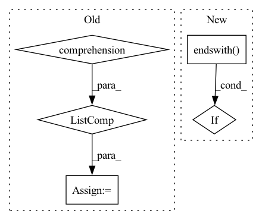

Pattern ID :1419
Before Change
s_ = s_[:-1]
tail = "\n"
s = str(s_).split("\n")
s = [(indent * " ") + line for line in s]
s = "\n".join(s)
s += tail
return s
After Change
// modified from torch.nn.modules._addindent
if indent > 0:
s_ = str(s_).replace("\n", "\n" + (indent * " "))
if s_.endswith( "\n" + (indent * " ")) :
s_ = s_.removesuffix(indent * " ")
return s_
In pattern: SUPERPATTERN
Frequency: 4
Non-data size: 5
Instances Fragment ID: 6597429
Project Name: ain-soph/trojanzoo
Commit Name: 6ad3c3bb05aaa8692bfe2535fa5594ff1830c49d
Time: 2022-02-16
Author: ain-soph@live.com
File Name: trojanzoo/utils/output.py
M Class Name: AnonimousClass
N Class Name: AnonimousClass
M Method Name: indent_str(2)
N Method Name: indent_str(2)
M Parent Class:
N Parent Class:
M File Name: trojanzoo/utils/output.py
N File Name: trojanzoo/utils/output.py
M Start Line: 99
M End Line: 109
N Start Line: 99
N End Line: 102
Before Change
)
try:
paths = zoo_model.download_framework_files()
index_path = [path for path in paths if path.endswith(".index")]
index_path = index_path[0]
model_path = index_path[:-6]
saver.restore(sess, model_path)
except Exception:After Change
index_path = [
f.path
for f in zoo_model.training.files
if f.name.endswith( ".index")
]
if len(index_path) != 1:
raise FileNotFoundError( Fragment ID: 6597436
Project Name: neuralmagic/sparseml
Commit Name: e21cf8c87c53102bab7799b91b939187c0a9b492
Time: 2022-09-09
Author: 109536191+corey-nm@users.noreply.github.com
File Name: src/sparseml/tensorflow_v1/models/registry.py
M Class Name: ModelRegistry
N Class Name: ModelRegistry
M Method Name: load_pretrained(7)
N Method Name: load_pretrained(7)
M Parent Class: object
N Parent Class: object
M File Name: src/sparseml/tensorflow_v1/models/registry.py
N File Name: src/sparseml/tensorflow_v1/models/registry.py
M Start Line: 229
M End Line: 241
N Start Line: 229
N End Line: 247
Before Change
relation: f"{relation}{INVERSE_SUFFIX}"
for relation in unique_relations
}
inverse_triples = np.stack(
[
triples[:, 2],
np.array([relation_to_inverse[relation] for relation in relations] , dtype=np.str),
triples[:, 0],
],
axis=-1,After Change
// contained if and only if create_inverse_triples is True.
if filter_out_candidate_inverse_relations:
unique_relations, inverse = np.unique(triples[:, 1], return_inverse=True)
suspected_to_be_inverse_relations = {r for r in unique_relations if r.endswith( INVERSE_SUFFIX) }
if len(suspected_to_be_inverse_relations) > 0:
logger.warning(
f"Some triples already have the inverse relation suffix {INVERSE_SUFFIX}. " Fragment ID: 6597439
Project Name: pykeen/pykeen
Commit Name: a007a273ff146107fd1b0c099d561c7b7279965a
Time: 2020-12-10
Author: berrendorf@dbs.ifi.lmu.de
File Name: src/pykeen/triples/triples_factory.py
M Class Name: TriplesFactory
N Class Name: TriplesFactory
M Method Name: from_labeled_triples(7)
N Method Name: from_labeled_triples(6)
M Parent Class:
N Parent Class:
M File Name: src/pykeen/triples/triples_factory.py
N File Name: src/pykeen/triples/triples_factory.py
M Start Line: 169
M End Line: 222
N Start Line: 269
N End Line: 319
Before Change
labels_path = os.path.join(current_dir, self.ROOT, self.args.dataset_dir, self.split, self.LABELS)
images_name = os.listdir(images_path)
images_name = [image_name for image_name in images_name if images_name.endswith(self.DEFORMED_EXT)]
items = []
for i in range(len(images_name)):
image_name = images_name[i]After Change
labels_path = os.path.join(current_dir, self.ROOT, self.args.dataset_dir, self.split, self.LABELS)
images_name = os.listdir(images_path)
images_name = [image_name for image_name in images_name if image_name.endswith( self.DEFORMED_EXT) ]
items = []
for i in range(len(images_name)): Fragment ID: 6597432
Project Name: mhashas/document-image-unwarping-pytorch
Commit Name: 5c4be015c0507f89cd83d62baac3dc526fd1446e
Time: 2020-02-05
Author: radu.sibechi@gmail.com
File Name: dataloader/docunet_im2im.py
M Class Name: DocunetIm2Im
N Class Name: DocunetIm2Im
M Method Name: make_dataset(1)
N Method Name: make_dataset(1)
M Parent Class: data.Dataset
N Parent Class: data.Dataset
M File Name: dataloader/docunet_im2im.py
N File Name: dataloader/docunet_im2im.py
M Start Line: 48
M End Line: 54
N Start Line: 48
N End Line: 54